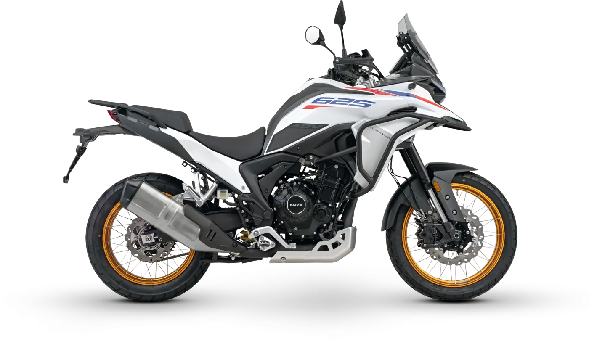
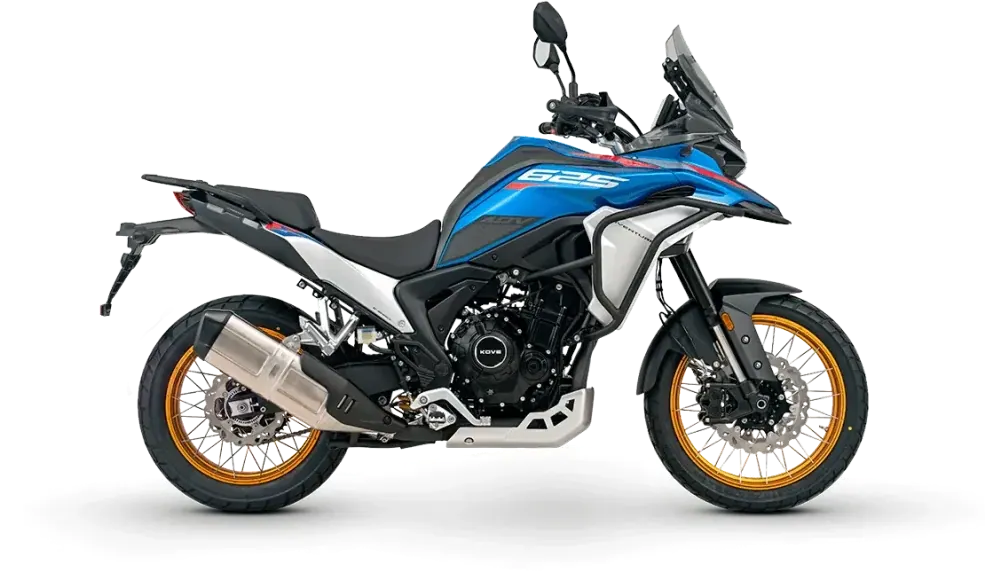
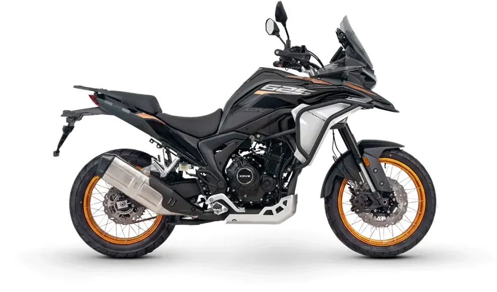
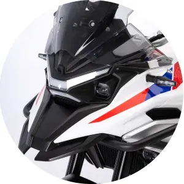
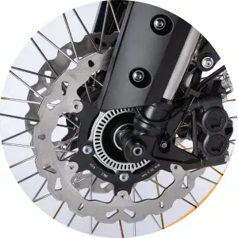

Inicio › Motos › Kove › 625X PRO

Kove
625X PRO
Diseñada para asfalto, preparada para off-road
- Motor
- 625 cc
- Estilo
- Enduro
Precio y financiación: te los damos al momento por teléfono (pendientes de publicar en la web).




Así la presenta Kove
Sistema de iluminación inteligente
El sistema de iluminación Full LED, con luces diurnas DRL, aporta mayor visibilidad y carácter propio. Los faros antiniebla completan el conjunto, garantizando una conducción segura incluso en las condiciones más exigentes.
Frenos, neumáticos y llantas
Neumáticos Pirelli Scorpion Rally STR con sistema TPMS de control de presión y temperatura, montados sobre llantas de aluminio con radios tipo tubeless (19″/17″). Sistema de frenada SAFE SF11 con ABS desconectable en 3 modos, doble disco delantero de Ø 298 mm con pinzas radiales de 4 pistones y disco trasero de Ø 240 mm, complementado con control de tracción (TCS) para una máxima seguridad.
Smart key
Detecta la llave automáticamente al aproximarse, permitiendo el arranque solo apretando un botón, sin necesidad de inserción ni giro de llave.
Puños calefactables
Puños calefactables con 3 niveles de intensidad, retrovisores con aviso de ángulo muerto, manetas de freno y embrague ajustables y paramanos de serie. Equipamiento pensado para viajar con más seguridad y confort.
Cubrecárter de aluminio
Fabricado en aluminio resistente, el protector de cárter ofrece una protección óptima para el motor y otros componentes esenciales frente a golpes, piedras y escombros del camino.